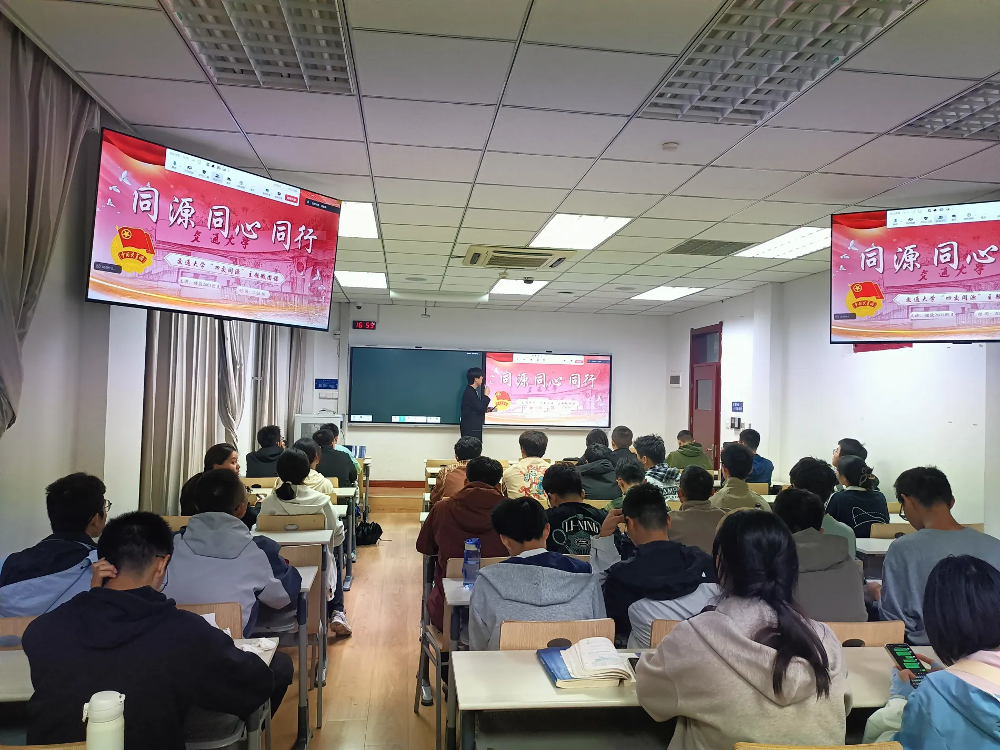

01 / 跨校交流四校同源，
四校同源，
共话交大。
跨越校区与地域，在共同的校史与青年话题中建立连接。

以交流为桥梁，以机械为专业主线，
以学科交叉为特色，以西迁精神为内核。
我们是西安交通大学文治书院机械类2606班。
从机械专业出发，把目光投向更多学科与真实的社会现场。课堂之外，我们参与校际联学、校园研学、科创交流与志愿劳动，也在一次次共同经历中成为更紧密的集体。
了解我们的团日主线 ↗围绕建校130周年、迁校70周年的历史节点，我们以跨学校、跨学段、跨专业的交流为纽带，把机械专业的学习延伸到更广阔的实践中。

跨越校区与地域，在共同的校史与青年话题中建立连接。


交流为桥梁 · 机械为主线 · 交叉为特色 · 西迁为内核
查看活动纪实 ↗从相识到同行。每一次走出教室，
都成为2606共同记忆的一部分。

那些真实发生过的瞬间，
都值得认真留存。